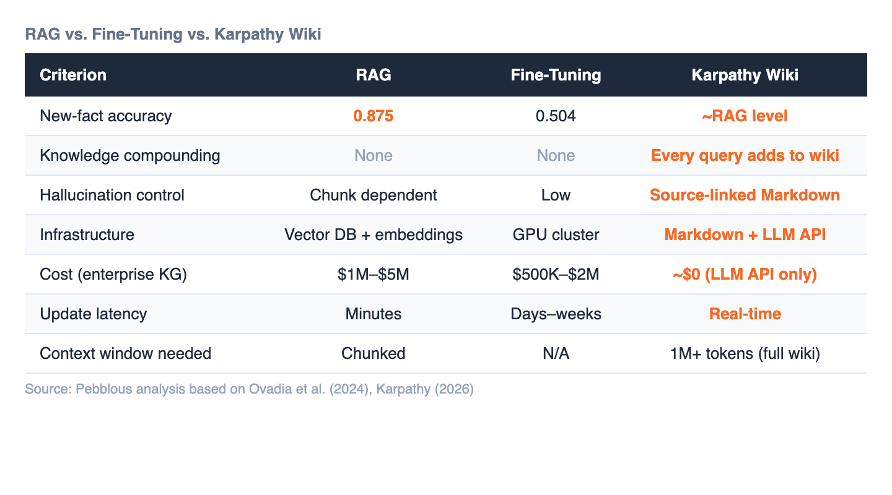

On April 3, 2026, Andrej Karpathy shared an idea on X that landed differently than his usual technical posts. Not a new model architecture. Not a training breakthrough. A personal knowledge management methodology — LLMs compiling Markdown files into a living wiki, managed in Obsidian.
It sounds simple. It is not.
What Karpathy described is a direct challenge to two decades of ontology engineering — the specialized discipline of building enterprise knowledge graphs that typically costs $10M–$20M and reaches production deployment only 27% of the time.
The methodology runs on three layers:
The key innovation is compounding. Traditional RAG performs a one-time retrieval per query against a vector database. In the Karpathy wiki, query outputs get filed back into the wiki. The knowledge asset grows with every use. This is fundamentally different from any existing approach.
"Every business has a raw/ directory. Nobody's ever compiled it. That's the product." — Vamshi Reddy (X), endorsed by Karpathy
The comparison is not academic. Ovadia et al. (2024) measured new-fact accuracy at 0.875 for RAG versus 0.504 for fine-tuning. RAG wins on factual recall. But Karpathy's approach goes further — it operates at RAG-level accuracy while compounding knowledge over time, requiring no vector database, no GPU cluster, and no infrastructure beyond Markdown files and an LLM API.

Context window expansion is what made this practical. GPT-3 had 2K tokens in 2020. Gemini 2.0 Pro has 2M tokens in 2025 — a 1,000x expansion in five years. Since Gemini 1.5 Pro hit 1M tokens in 2024, loading an entire wiki into a single context became technically viable without chunking or embedding.
Enterprise knowledge graphs built with OWL, SPARQL, and dedicated ontology engineers have been the gold standard for two decades. But the economics are brutal: $10M–$20M in upfront investment, years of expert labor, and a 27% production deployment rate. McKinsey reports that knowledge workers spend 1.8 hours per day just searching for information.
Karpathy's methodology offers the same functional outcome — structured, queryable, evolving knowledge — at a cost approaching zero. No specialized engineers. No proprietary platforms. Markdown, an LLM, and Obsidian.
This is what Pebblous editor JH calls "Cheap Ontology": the democratization of knowledge representation through foundation models.
There is a critical vulnerability in this pipeline, and it sits at the very beginning.
If the raw data — the PDFs, transcripts, and notes in Layer 1 — contains errors, duplicates, or inconsistencies, those propagate into the wiki. If the wiki is then used to generate synthetic Q&A pairs for fine-tuning, the errors get baked into model weights permanently. The compounding effect that makes the methodology powerful also compounds errors.
This is where data quality diagnosis becomes non-negotiable. Not as an afterthought, but as the first step before any knowledge compilation begins. Identifying distribution anomalies, duplicate entries, label errors, and formatting inconsistencies in the raw directory is the prerequisite for everything downstream.
The model is ready. The methodology is proven. The bottleneck is whether your data is clean enough to compile.